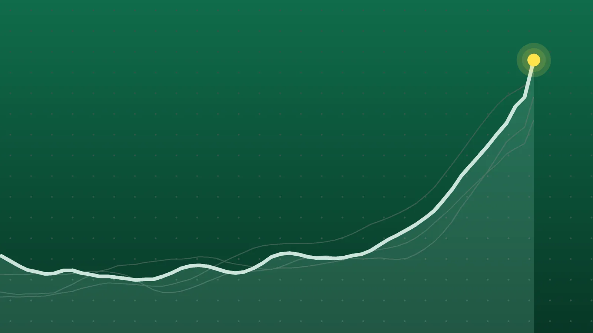

SportsExplainer
NHL Scores, Oct. 25: Canadiens Edge Jets in Heritage Classic
Road teams won three of Sunday’s five games, none needed overtime, and Vancouver’s losing streak reached 10 while Dallas pushed its winning run to five.

Quick take
- Rookie Jacob Fowler stopped 33 shots as Montreal beat Winnipeg 2-1 before 32,342 at the Heritage Classic; the Jets have lost five in a row.
- Quinn Hughes reached 500 career points in his return to Vancouver, and Minnesota won 4-2 to hand the Canucks a 10th straight loss.
- Ryan O’Reilly had two goals and two assists as Nashville went 4-for-7 on the power play in a 6-2 win over Colorado.
- All five games ended in regulation; Dallas beat the Islanders 6-3 for its fifth straight win and Florida won 3-2 at Chicago on a late Lars Eller goal.
Why it's trending The NHL played five games on Sunday, Oct. 25, led by the outdoor Heritage Classic in Winnipeg and Quinn Hughes’ first game back in Vancouver.
NHL scores for Oct. 25
Montreal won the outdoor Heritage Classic in Winnipeg 2-1, with rookie goaltender Jacob Fowler turning aside 33 shots before a crowd of 32,342 at Princess Auto Stadium, AP reported. The loss was the Jets’ fifth in a row and their first game since sending Connor Hellebuyck to New Jersey.
Across the country, Quinn Hughes collected his 500th NHL point in his first game back in Vancouver, and Minnesota won 4-2 to extend the Canucks’ slide to 10 straight. Sunday had five games, matching the schedule, and all five went final in regulation, per the Hockey-Reference scoreboard and SportBusy’s schedule.
All final scores
| Winner | Score | Loser | Note |
|---|---|---|---|
| Florida Panthers | 3-2 | at Chicago Blackhawks | Lars Eller scored with 2:23 left; Chicago 0-for-7 on the power play |
| Dallas Stars | 6-3 | New York Islanders | Jason Robertson had two goals; Stars have won five straight |
| Montreal Canadiens | 2-1 | at Winnipeg Jets | Heritage Classic; Fowler 33 saves, Cole Caufield two assists |
| Nashville Predators | 6-2 | Colorado Avalanche | Ryan O’Reilly 2 goals, 2 assists; Steven Stamkos scored twice |
| Minnesota Wild | 4-2 | at Vancouver Canucks | Hughes’ 500th point; Kirill Kaprizov’s league-best 13th goal |
Fowler holds on outdoors
Lane Hutson opened the scoring at 7:19 of the second period, and Kaiden Guhle doubled the lead at 11:04, according to NHL.com. Fowler kept the Jets off the board until Isak Rosen scored his first of the season late in the third period. Montreal then killed a tripping penalty to Josh Anderson in the final 1:32, theScore noted.
Fowler has won five starts in a row. NHL.com said he is the youngest goalie ever to start an outdoor game and the fourth rookie to win one. Stuart Skinner made 19 saves for Winnipeg, and Dawson Mercer, acquired in the Hellebuyck trade, made his Jets debut. Winnipeg joined Edmonton as the only Canadian clubs to host two outdoor games; the Jets lost the first one 3-0 to the Oilers in 2016.
Hughes hits 500 in Vancouver
The former Canucks captain was booed each time he had the puck but also got a video tribute in the first period, and he raised his stick to the crowd, the Parksville Qualicum News reported. His power-play rebound goal at 12:55 of the second made it 3-0 and was point No. 500, in his 520th game. Per the Wild’s recap, only six defensemen got there faster, and among American defensemen only Brian Leetch did.
Hughes then sent Kaprizov in alone for a 4-0 lead. Maxim Shabanov and Bobby Brink scored earlier. Max Sasson and Brock Boeser answered in the third. Calvin Pickard won his first game for Minnesota, and the Wild outshot Vancouver 34-18, per CBS Sports.
Predators cash in on the power play
Nashville scored on four of its seven power plays, its first four-goal power-play night since Jan. 7, 2012, NHL.com reported. Filip Forsberg scored at 4:01 of the first on a Roman Josi setup, and Stamkos added a goal that video review confirmed had crossed the line.
O’Reilly scored twice in the second, sandwiched around a Jack Drury goal, and Nashville led 5-0 before Artturi Lehkonen and Devon Toews scored for Colorado. Stamkos closed it on a 5-on-3. Josi had three assists. Justus Annunen made 19 saves for his first win this season against Scott Wedgewood, the goalie he was traded for last November, AP noted. Lehkonen’s point streak is at seven games.
What it means
Road teams went 3-2, and the five games produced 31 goals, about six per game. Records after Sunday, from the game recaps, with standings points (two for a win, one for an overtime or shootout loss):
| Team | Record | Points |
|---|---|---|
| Minnesota | 8-3-2 | 18 |
| Montreal | 6-3-2 | 14 |
| Florida | 6-4-2 | 14 |
| Colorado | 6-5-1 | 13 |
| Nashville | 4-3-4 | 12 |
| Winnipeg | 4-4-3 | 11 |
| Chicago | 3-8-0 | 6 |
| Vancouver | 2-10-1 | 5 |
Minnesota’s 18 points lead the Western Conference, per Hockey-Reference, and the Wild are 6-2-1 over their last nine. Vancouver sits last in the West with five points, 13 behind Minnesota.
In Dallas, the Islanders tied the game three times before Wyatt Johnston broke a 3-3 tie early in the third and Robertson added a breakaway goal, AP reported. The loss ended New York’s five-game point streak, and Matthew Schaefer’s 25th career goal moved him past Bobby Orr for second among teenage defensemen, trailing only Phil Housley, the Islanders said. Dallas has killed 20 straight penalties.
In Chicago, Eller beat Spencer Knight during a Blackhawks line change for his first goal of the season, NHL.com reported. Chicago has three goals in its last three games, all losses, and its power play ranks last in the league at 8.33%, per CBS Sports. For Saturday’s 12 games, see our Oct. 24 roundup.
What’s next
Monday, Oct. 26, has three games, all times ET, per SportBusy and NHL.com’s TV listings:
- 7 p.m.: the New York Rangers host Los Angeles
- 8:30 p.m.: Calgary hosts Toronto
- 9:30 p.m.: Edmonton hosts Detroit
Tuesday brings 11 games. Several of Sunday’s teams are back at 8 p.m.: Nashville hosts the Islanders, Winnipeg hosts Florida, Dallas hosts New Jersey, Montreal visits St. Louis and Chicago hosts Los Angeles. Minnesota plays at Utah at 9 p.m.
Sources
- Hockey-Reference.com NHL Scores (Oct. 25, 2026)Oct. 25, 2026
- SportBusy NHL Schedule October 2026Oct. 26, 2026
- NHL.com NHL nationally televised games for week of Oct. 26Oct. 26, 2026
- NHL.com Fowler saves 33, Canadiens hold off Jets in Heritage ClassicOct. 25, 2026
- Associated Press via ESPN Canadiens hold off the Jets 2-1 outdoors in the NHL Heritage ClassicOct. 25, 2026
- theScore Canadiens hang on to beat Jets in Heritage ClassicOct. 25, 2026
- Minnesota Wild Quinn Hughes reaches 500 points in return to Vancouver as Wild top CanucksOct. 25, 2026
- Parksville Qualicum News via Salmon Arm Observer Boos for Hughes: Wild win 4-2 as ex-Canucks captain jeered in return to VancouverOct. 25, 2026
- CBS Sports Minnesota Wild vs. Vancouver Canucks - NHL Game Recap - October 25, 2026Oct. 25, 2026
- NHL.com O'Reilly has four points, Predators roll past AvalancheOct. 25, 2026
- Associated Press via WRAL O'Reilly, Stamkos each score twice as the Predators beat the Avalanche 6-2Oct. 26, 2026
- Associated Press via Yahoo Sports Jason Robertson scores twice to help the Stars beat the Islanders 6-3Oct. 26, 2026
- New York Islanders Takeaways: Islanders' Five-Game Point Streak Ends in 6-3 Loss to StarsOct. 25, 2026
- NHL.com Eller scores late, lifts Panthers past BlackhawksOct. 25, 2026
- CBS Sports Panthers edge Blackhawks 3-2 behind Lars Eller's late winnerOct. 25, 2026
Keep reading

NHL Scores, Oct. 24: Nylander Hits 300 as Leafs Rout Oilers 7-2
NHL scores for Oct. 24, 2026: all 12 finals, including Toronto’s 7-2 win in Edmonton, Utah’s overtime comeback on Tampa Bay and Carolina’s 4-0 shutout.

Sports Scores, Oct. 23: Brewers Win World Series Game 1, 3-2
Sports scores for Oct. 23, 2026: Brewers 3, Rays 2 in World Series Game 1, plus two NHL games, five European soccer leagues, cricket and 20 tennis results.

NHL Scores, Oct. 22: McDavid and Draisaitl Get 5 Points Each
NHL scores for Oct. 22, 2026: all 12 final results, including Edmonton’s shootout win over Carolina, Toronto’s late winner and Vancouver’s ninth loss in a row.